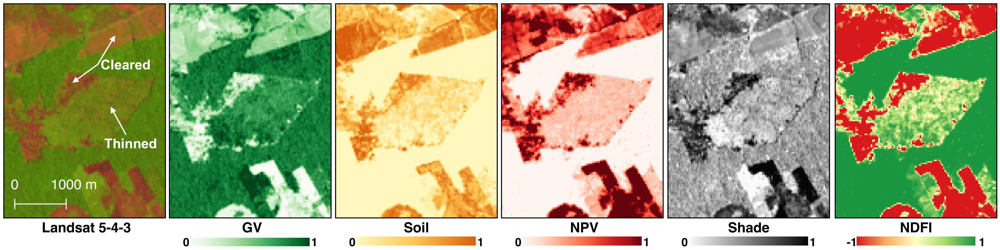

Algorithm Description¶
Data¶
CODED was designed to use 30m Landsat data. Before running the algorithm, it is necessary that a multi-dimentional data stack be created. The data stack contains all available Landsat data or, in the Earth Engine implementation, monthly composited data.

Pre-processing¶
All available Landsat data is used a converted to surface reflectance using the standard LEDAPS surface reflectance product. The data is first filtered for clouds using CFMask.
The data are then converted through linear spectral unmixing to represent fractions of spectral endmembers developed in Souza et al., 2005, in addition to a self-developed cloud endmember. The 5 endmembers are:
- Green Vegetation
- Non-Photosynthetic Vegetation
- Shade
- Soil
- Cloud
The endmembers are transformed according to the methodology in Souza et al (2005) in to the Normalized Fraction Degradation Index (NDFI). NDFI is generally designed to highlight areas of degraded or cleared forests. NDFI was originally designed for forest monitoring in the Amazon.
Forest classification and characterization¶
To find degraded or damaged forests, the original state of the forest must first be characterized. Generally, an NDFI value near or at 1 is indication of a forested landscape. However, the magnitude of NDFI will depend on the density of the forest. A training period is used to define the ‘general’ state of the forest. To account for clouds, sensor noise, and other factors that cause image-to-image variability, a regression model is fit for every pixel for all the observations in the training period. The regression model is made up of the following components:
- A constant term, representing overall magnitude
- A sine and cosine term, representing seasonal, or intra-annual variability
- A noise term, summarized in the algorithm as the root-mean-squared-error
These regression components are used to differentiate a forest from other land covers. The following chart shows how the land covers differ based on regression RMSE and magnitude based on 1250 training locations across the Amazon basin:

An important step in this process is not just forest classification, but forest characterization. By calculating the training NDFI regression magnitude, change in NDFI can then be calculated relative to original condition. In this manner, degradation is defined as its relation to original state, not just the NDFI at the current time. A good example of this distinction is in forested cerrado, which exists naturally in a state of non-continuous canopy cover. The cerrado will naturally have a lower NDFI than a closed-canopy forest, but that does not mean it is degraded. This difference alludes to the difficulty in classifying a degraded forest based on a single image alone.
To see the difference in forest characterization with canopy cover, see the difference in NDFI between a dense congruent canopy in Rondônia (top), and a thinner forested cerrado in Mato Grosso (bottom, images courtesy Google Earth):

Change detection¶
The change detection is performed by using the regression coefficients to predict future NDFI observations. In this way the algorithm is being performed online, meaning that change is monitored for sequentially in time. If new NDFI observations deviate beyond a change threshold for 5 consecutive observations, a disturbance is detected. The change threshold is effectively a control on the maximum allowable residual in a ‘stable’ time series.